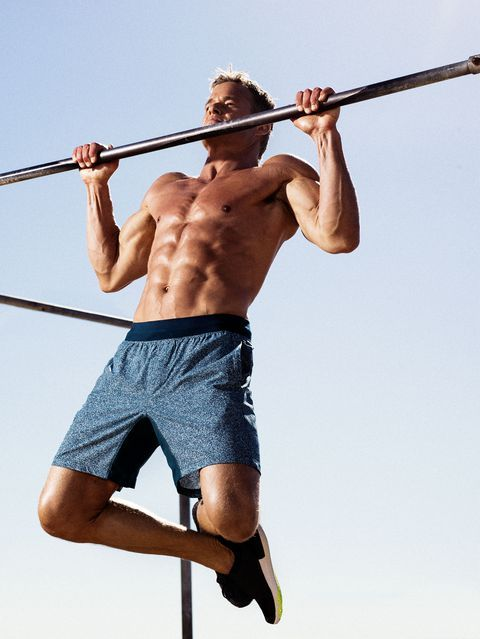
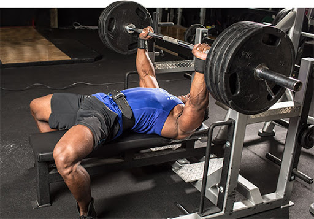

|  |
|
Pullups(згибови)е најдобра вежба во областа на streetworkout која најмногу го активира грбот и како секундарен мускул бицепсот. |
|  |
|
Bench press e најдобра вежба која примарно ги активира мускулите на градите, а трицепсот како секундарен мускул. |
|
Премини на врвот пример за правилни згибовипример за Правилен bench pressmartin.apostolovski@gmail.com |